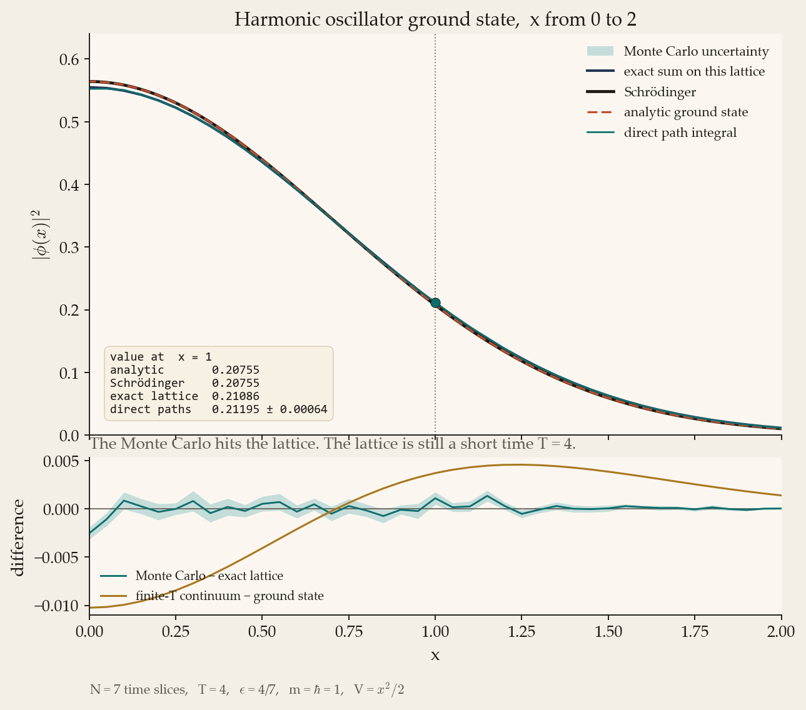
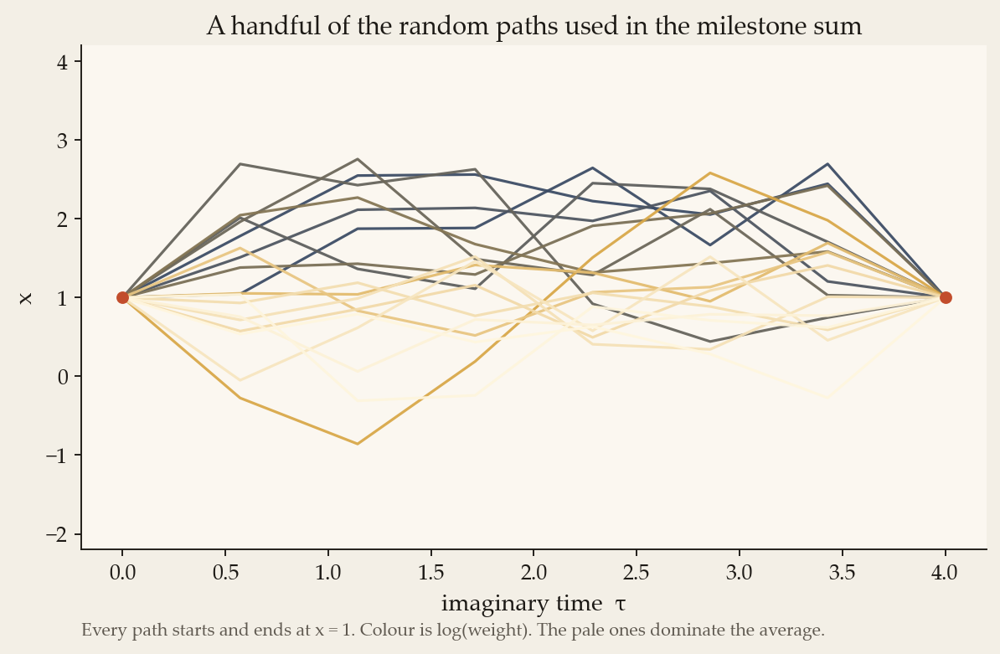
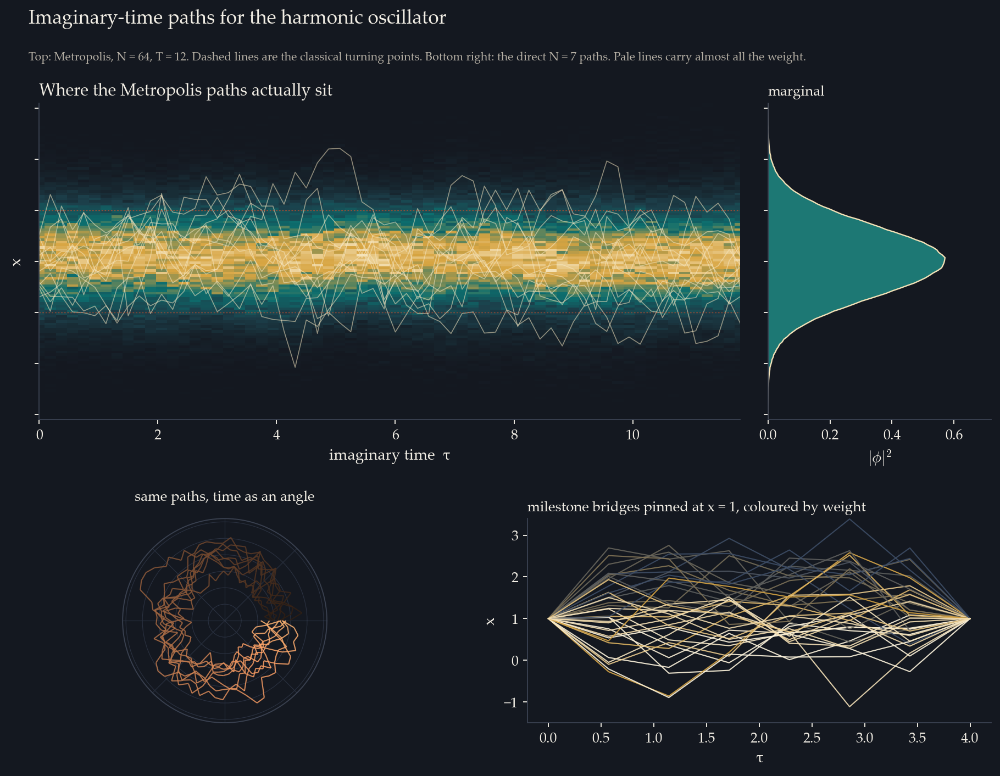
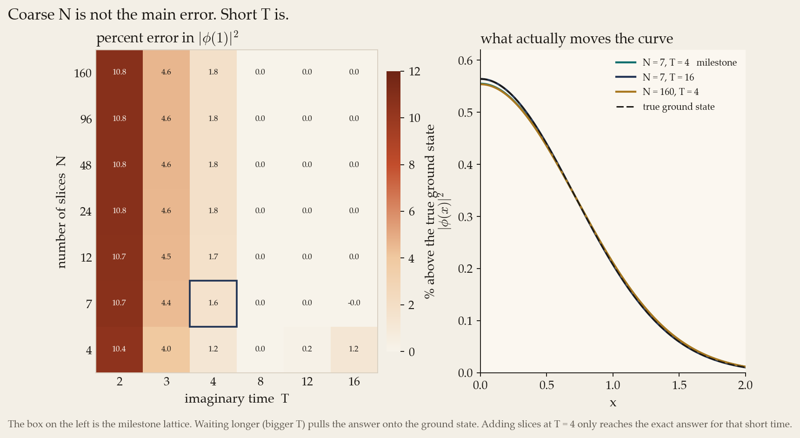
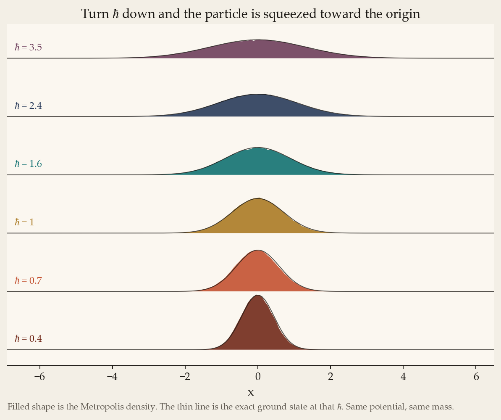
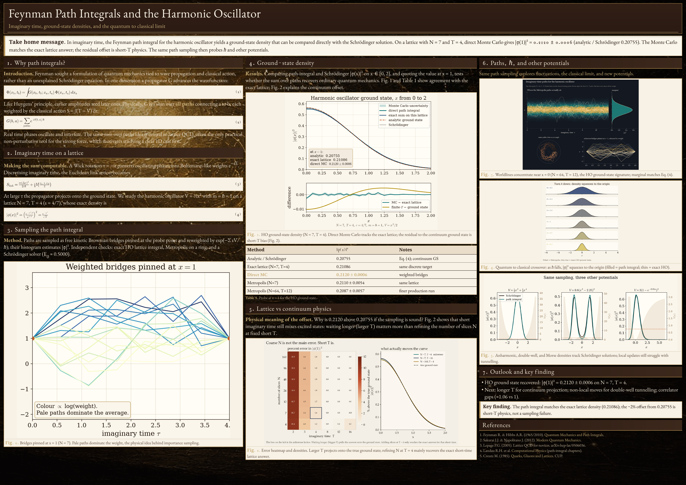

Imaginary time
From oscillating phases to a weighted average of paths
Real-time amplitudes cancel. Wick rotation turns the phase into a decaying weight, so a computer can sample paths instead of summing spinning phases.
Feynman’s rule sums every path x(t) with a phase eiS[x]/ℏ. Near the classical path the phases align; wild paths cancel. Numerically that integrand is unstable.
Set τ = −it. The weight becomes e−SE/ℏ with Euclidean action kinetic plus potential. Large action means small weight. On a closed path of length T, excited states die as e−(En−E0)T, leaving the ground-state density.
The lattice chops imaginary time into N slices of width ε = T/N. The free kinetic piece is a Brownian bridge; the potential reweights each bridge. That is the direct Monte Carlo method in this engine.
SE[x] = ∫₀ᵀ (½ ẋ² + V(x)) dτ
|φ(1)|² = e−1/√π = 0.20755
Interactive
Sample bridges and reweight them live
Controls drive a browser port of bridge_potential_weight and a light direct_ground_density. Suite numbers below use the full C++ run.
Exact lattice map
N–T grid from the suite
Exact harmonic-oscillator lattice values of |φ(1)|² from exact_alpha.csv. Selected cell follows the sliders when on-grid.
Milestone
Direct Monte Carlo meets the lattice, not the continuum
Suite numbers from the C++ engine. The residual against 0.20755 is short-T / coarse-ε bias; against the exact lattice value the Monte Carlo agrees.
Direct MC · N=7 · T=4
0.2120 ± 0.0006
Reported milestone |φ(1)|². Exact lattice on the same grid is 0.21086; analytic / Schrödinger continuum is 0.20755. Metropolis on N=7 gives 0.2110 ± 0.0054.
| Quantity | Value |
|---|---|
| Analytic |φ(1)|² | 0.20755 |
| Schrödinger |φ(1)|² | 0.20755 |
| Exact lattice N=7, T=4 | 0.21086 |
| Direct MC | 0.2120 ± 0.0006 |
| Metropolis N=64, T=12 | 0.2087 ± 0.0057 |
| Correlator gap (HO) | ≈ 1.06 (true 1) |
| Double-well gap (ℏ=1) | 0.067 (spectrum; local Metropolis misses tunnelling) |


Further suite figures — worldlines, convergence, ℏ scan




Formative poster
Feynman Path Integrals and the Harmonic Oscillator
A2 landscape formative poster for the path-integral project. Physics leads; computing is the instrument. Figures are suite outputs from this repository.
Rated 8.8/10 on the formative mark scheme after visual and narrative passes — lattice hit vs short-T residual is the take-home.